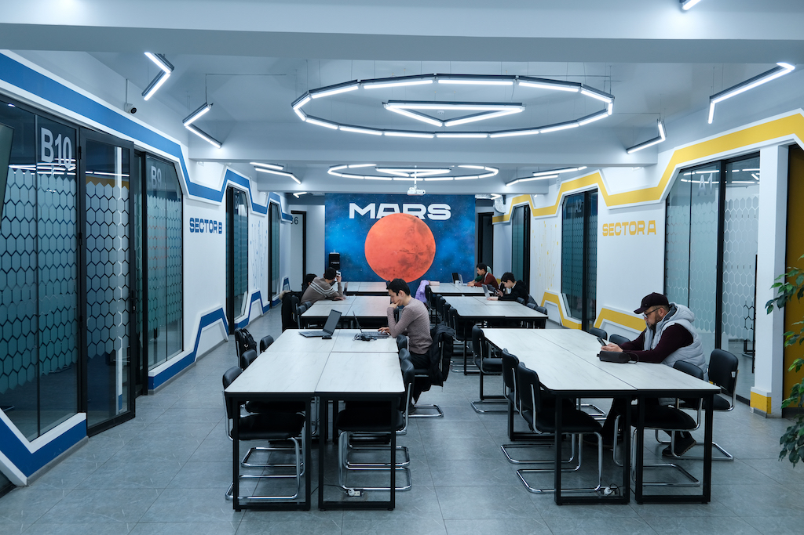

Bolalarga Qiziqarli Vazifa
Qanday qilip atroftagi dunyoni ko'rishni yaxshi ko'rasiz?
Qanday qilib o'qishni yaxshi ko'rasiz?
- Kitob
- Qalam
- Chiroq
Sizning sevimli Maktabingiz

Sevimli taomingizni tanlang:
Taomlarni korish
O'quvchilar Ro'yhati:
- Ali(6-yosh)
- Vali(7-yosh)
- Nodir(5-yosh)
Qanday qilib interneta qiziqarli narsalar ko'rishni yahshi korasiz?